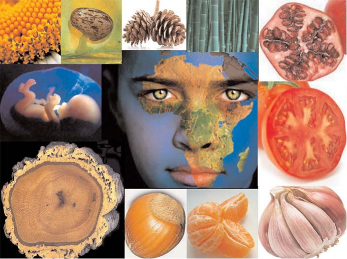
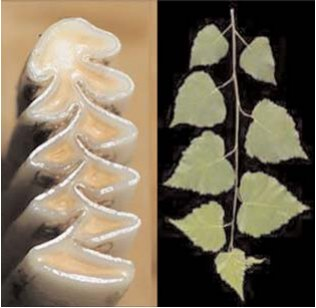
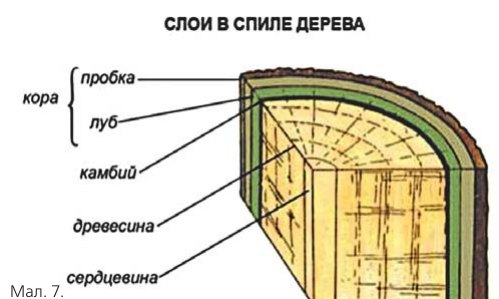
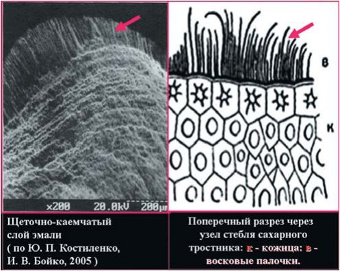

Точка зору · журнал «ДентАрт» 2013 №4 (73)
Філотаксис і біомеханіка зубів. Частина II
PHYLLOTAXIS AND BIOMECHANICS OF TEETH. PART II
«Ми маємо більше шансів здобути випадково уламок істини, якщо уявлятимемо собі найбільш неуявне, ніж коли ми намагатимемося рухатися серед вічності, тримаючись берегів логіки і теперішніх можливостей».
Моріс Метерлінк, «Розум рослин»
Лікарська наука Тибету на зорі свого розвитку і вдосконалення стала користуватися двома науковими методами — аналізом і синтезом, які лягли в її основу, і до IX століття досягла свого найвищого розвитку. Вчені лікарі Тибету користувалися аналізом і синтезом як основними методами майже на тисячу років раніше, ніж це почали застосовувати європейські учені XVIII століття (Кант, Лейбніц, Декарт та ін.).1 Найвидатніші після кончини Бюффона (1788 р.) морфологи Й. Гете і Ж. Кювьє добилися блискучих результатів без посилання на еволюцію. Гете висунув знамениту «хребетну теорію черепа», яка стверджувала, що череп хребетних складений з перших шести змінених хребців безчерепних предків, які поступово зазнали складних перетворень. Показовим прикладом є відомий випадок, коли знаменитий Кювьє на початку XIX століття за допомогою названих вище методів, застосовуючи принципи порівняльної анатомії, на підставі кількох знайдених зубів упевнено заявив, що вони належать вимерлому сумчастому, а також дав детальний опис тих викопних хребетних, які були відкриті дослідниками пізніше. Цим він був схожий на тибетських лікарів. На противагу тибетській і старогрецькій науці, сучасна наука дотримується певної ідеї, тільки якщо вона підтверджена досвідом, оскільки прийнято вважати, що саме досвід є критерієм істинності і хибності. «Свого часу Ейнштейн зрозумів, що фізичні закони не мають бути обмежені тим, що можуть і чого не можуть уявити собі фізики».2 Засновник і перший президент Української академії наук (1918), академік Санкт-Петербурзької Імператорської академії наук, один з представників космізму, дослідник природи і мислитель планетарного масштабу, котрий зробив величезний вплив на розвиток наук про Землю і на світогляд багатьох людей, Володимир Вернадський (1863-1945) рішуче відстоював переконання, що емпіричні узагальнення на основі точних безперечних фактів є міцною і непорушною основою для опису загальної картини безлічі процесів, що здійснюються навколо нас або відбувалися у далекому минулому, в чомусь іноді непіддатливих логічному аналізові внаслідок неповного їх вивчення і не осмислених у цю епоху науковою думкою. На початку третього тисячоліття в посткласичній науці почали формуватися основи нової космопланетарної парадигми, в якій реально стало об'єднуватися матеріальне й ідеальне, невідступно змушуючи суспільство, наукову думку істотно розширити колишні уявлення про суть живої речовини й інтелекту. Таким чином, методи пізнання пов'язані між собою тонкими непомітними нитками, але незважаючи на різність шляхів, вони, як малі джерела, збираються в річки і течуть до єдиного океану знань про навколишній світ і Всесвіт. Проте може статися і так, що для людства контури його ніколи не будуть ясні, тому що час, немов невтомний художник, тонкими мазками невидимих фарб змінює картину реальності, пропонуючи нам кожну мить нові сюжети. І здається, що його фантазія невичерпна, його присутність відчутна, але мовчазний лик його нам невідомий. Так само як нам до кінця не відомі приховані зв'язки між часом і простором. Як часто в нашому житті ми не знаходимо потрібних слів, щоб пояснити, наприклад, природне явище або яке-небудь спостереження! І з якою дивовижною ясністю і стислістю думки до цього підходили у Стародавньому Китаї: «Небо і Земля мають досконалу красу, але не ведуть про це мови; чотири пори року мають ясні закони чергування, але не обговорюють їх; пітьма речей має певні правила становлення, але не викладає їх. Мудрий же шукає джерело досконалої краси Неба й Землі і осягає правила становлення пітьми речей» (Чжуан Цзи).
Одним з яскравих прикладів такого справжнього мудреця в історії європейського природознавства був Йоганн Вольфґанґ Гете. Упродовж нашого дослідження неодноразово звертаючись до його великої творчої і наукової спадщини, ми і цього разу знаходимо для себе одну з важливих відповідей на питання, що рано чи пізно виникає у кожного, хто стикається з подібними темами у своїй науковій і професійній діяльності, а саме: «Для чого»? Як вважав сам Гете, «питання про ціль, питання: Для чого? — безумовно ненаукове. Дещо далі веде нас питання: Як»?3 Заторкуючи подібну проблему, нам не слід забувати і про застереження, з яким звертався до наукового світу на початку 30-х років минулого століття видатний російський філософ Микола Бердяєв: «Наука і наукове передбачення забезпечують людину і дають їй силу, але вони ж можуть спустошити свідомість людини, відірвати її від буття і буття від неї... В історизмі пам'ять непомірно перевантажена і обтяжена. Усе перетворене на чужий об'єкт, в якому підриваються творчі сили пізнання, перепиняється можливість прориву до сенсу. Філософія бачить світ з людини, і тільки в цьому її специфічність і головна відмінність від науки».4
Світове Дерево
«Час — безкрає темне море: все у Всесвіті приховало безслідно».
Лян Цзундай
У багатьох міфах про створення світу вода називається джерелом усілякого життя, будучи своєрідним символом первоматері, в якій містилися усі тверді тіла перед тим, як набули форми і жорсткості. Серед первозданного океану одним з перших на клаптику виникає Світове, або Космічне, древо. Майже відразу воно стає опорою створеного світу, утілюючи в собі його образ (мал. 1). На думку давньогрецького філософа, жерця, лікаря Емпедокла (бл. 490 р. до н. е. — бл. 430 р. до н. е.), життя на нашій планеті почалося ще до того, як народилося Сонце. У ту пору Землю зрошували щедрі дощі. Так створилися спершу рослини — провісники і предтечі справжніх живих істот. А пізніше стали з'являтися і тваринні форми.5 У тілі людини все розташоване в порядку, передбаченому Природою, вважав Гіппократ. Є лікарі і філософи, за словами Гіппократа, котрі вважають, що не можна зрозуміти лікарського мистецтва, не знаючи, що таке людина.
Вивчення історії і культури народів світу засвідчило, що вже у прадавніх цивілізацій на Землі існував культ поклоніння священному Дереву Життя. Трипільська цивілізація* була одним з найбільш ранніх центрів розвитку планети. Це умовна назва спільноти племен, що жили на землях сучасної України, Молдови і частини Румунії з 5400 по 2750 р. до н. е. У 1884 році румунський дослідник Теодор Бурада під час розкопок знайшов елементи глиняного посуду і теракотові фігурки неподалік села Кукутень, а в 1897 році в містечку Трипілля під Києвом український археолог чеського походження Вікентій Хвойка виявив перші сліди цієї культури на території України. Ареал осілості трипільців охоплював величезний простір — від Трансильванії до середнього Дніпра, від Волині до узбережжя Чорного моря. Трипільська культура навдивовижу схожа з культурою островів Егейського моря. Це дало привід стверджувати, що у той час від Криту до Дніпра був єдиний культурний простір. Можливо, не лише культурний, але й етнічний. Зображення Світового Дерева, або Дерева Життя, можна побачити на кераміці Трипільської культури V-III тис. до н. е. Це один з найпопулярніших символів українського народного мистецтва, зокрема візерунків весільних рушників і писанок. Звертає на себе увагу антропоморфне зображення Дерева життя (Pomul vieţii — Помул вецій) у молдовському національному орнаменті — як відгомін спільності світових культур (мал. 2).6, 7 Древні слов'яни також використовували символіку дерева для опису структури світу: дерево — весь світ, квіти — «человеци». Дуб вважався живою істотою, іноді навіть прообразом людини. Наприклад, мешканців античної Аркадії називали «нащадками дуба».А слово «дуб», вірогідно, походить від праслов'янської форми слова, що означає «дерево». Абсолютно очевидно, що Світове Дерево — глобальна універсальна метафора для опису космогонічної системи світу, його структурної організації. Символіка Світового Дерева проявила себе в міфології практично усіх культурних спільнот, котрі дійшли до розуміння світу як Космосу, а не як хаосу, і шанували рослинний світ як щонайтонший прояв життя.8 Проте з часом поступово стала наростати багатовікова, нерозв'язна і до нинішнього моменту, суперечність, суть якої зводиться до того, що як би добре не були організовані рослини, тварини, у тому числі і людина, їх організація — не справа «мудрого творця», а результат дії законів природи. У той же час залишається без визначеної, беззастережної, відповіді просте запитання французького лікаря і філософа-матеріаліста Жульєна Офре де Ламетрі (1709-1751): «Як, будучи сліпою, природа створила очі, котрі бачать, як, не маючи мислення, вона створила мислячу машину?».
*Трипільська культура, інакше культура Кукутені, рум. Cultura Cucuteni, укр. Кукутені культура або Кукутень-Трипільська культура)..
![Світове Дерево (Аrbor Mundi, Космічне Дерево) — характерний для міфопоетичної свідомості образ, який втілює універсальну концепцію світу, включаючи і такі його трансформації або образи, як «вісь світу» (axis mundi), «світовий стовп», «світова людина» («першолюдина») і т. п., що ототожнює Мікро- і Макрокосмос, Природу і Людину: 1) Давньомексиканський малюнок з ацтекського кодексу, що зображує Світове Дерево з оком бога на його вершині; 2) Лотос — прадавня рослина (близько 100 млн. років, тип покритонасінні), символ творіння світу з первинних вод або порожнечі; 3) Священне дерево скандинавів ясен Іггдрасиль — символ зростання, життя, єднання субстанцій, центр світу; 4) Світове Дерево (Стародавній Єгипет); 5) Світове дерево (Ассирія); 6) Мандала «Дерево Світу» — тибетський символ духовного відображення світового порядку.](images/postol73-001.jpg)
![Кукутень-Трипільська культура. Тривалий час найпершим цивілізованим народом вважалися шумери, що жили у III-ому тис. до н. е. в Месопотамії (тер. сучасного Іраку). Після розкопок у 1897 р. біля села Трипілля під Києвом межі появи «людини господарської» відсунулися, як мінімум, на два тисячоліття в минуле, а знайдена культура дістала назву Трипільської. У 1966 році археологи виявили на території України величезні поховані під землею міста. Населення багатьох з них перевищувало 15-20 тис. чоловік — величезну за мірками восьмитисячолітньої давності цифру. Та й масштаби вражали: ученим відомі трипільські поселення розміром до 250 квадратних кілометрів. Площа найбільших будівель іноді сягала 1000 квадратних метрів.6, 7.](images/postol73-002.jpg)
За визначенням Ламетрі, не можна вичерпати невичерпне, визначити усі причинні зв'язки Всесвіту, але можна і треба пізнавати зв'язки, спираючись «на посох спостереження і досвіду», або ті, про які можна судити за аналогією зі спостережуваними. Будемо ж і надалі неухильно дотримуватися цих настанов, дослухаючись і вдумливо вникаючи в сенс сказаного, але не завжди почутого: «Знання ґрунтується на знанні, і все нове має значущість внаслідок того, що непомітно випливає з того, що знали раніше» (Р. Оппенгеймер).
Ієрогліфи на пергаменті Землі
«Кожна істота — аналог усього існуючого».
Йоганн Вольфганг Гете
Вивчення прадавніх шарів земної кори, відбитків скам'янілостей рослин і тварин, які жили раніше, дозволило встановити, що Земля утворилася близько 5 млрд. років тому. А перші одноклітинні рослини виникли, за новітніми даними, близько 3 млрд. років тому. Близько 400-350 млн. років тому значну частину поверхні Землі займали водні басейни. Зовнішні умови сприяли росту і розвитку різноманітних одноклітинних водоростей, які широко розселилися і дали початок багатоклітинним організмам. Поверхня материків і дно океану з часом змінювалися. Змінювався і рослинний світ. Коливання земної кори призводило до того, що на місці морів виникала суша. Відступаючи, морська вода затримувалася в западинах. Вони то пересихали, то знову наповнювалися водою. Висушування відбувалося поступово. Деякі водорості пристосувалися до життя в наземних умовах. Перехід рослин до наземного способу життя пов'язаний з пересиханням окремих ділянок земної поверхні (мал. 3).9
Там, де клімат ставав суворішим, древні голонасінні рослини (папороті) поступово вимирали. Насіння у насінних папоротей утворювалося на листі і лежало відкрито; звідси й назва «голонасінні рослини». На зміну їм з'явилися добре знайомі сучасні голонасінні, що отримали широкий розвиток лише в мезозойській ері — це сосни, ялини, ялиці та інші хвойні рослини, більш пристосовані до життя в умовах сухого прохолодного клімату, який змінив вологий і теплий кам'яновугільний період. Пристосованість голонасінних рослин до життя на суші виявилася передусім у тому, що процес розмноження у них перестав залежати від наявності води у зовнішньому середовищі.
Покритонасінні рослини з'явилися на Землі близько 130 млн. років тому від древніх видів голонасінних. Виникнення у рослин насіння потрібно розглядати як подальше їх пристосування до сухопутного способу життя. Поява насіння — великий крок уперед на шляху еволюції рослин. На межі крейдяного і палеогенового періоду, близько 65 млн. років тому, сталося одне з п'яти так званих «великих масових вимирань». Немає єдиної точки зору, було це вимирання поступовим чи раптовим, але його результатом стало зникнення з лиця землі динозаврів. Усього загинуло 16% родин морських тварин (47% родів) і 18% родів сухопутних хребетних. Проте значна частина рослин і тварин пережила цей період. Наприклад, не вимерли сухопутні плазуни, такі як змії, черепахи, ящірки, і водні плазуни, такі як крокодили. Вижили найближчі родичі амонітів — наутілуси, а також птахи, ссавці, корали і наземні рослини.
![Крейдяний період, кінець Мезозойської ери (144-66 млн. років тому). Величезні масиви суші суперматерика Пангея стали рухатися і розпадатися на частини, утворивши нові континенти — Лавразію і Гондвану. До кінця крейдяного періоду поширилися квіткові рослини і примітивні ссавці. Систематичні знахідки скам'янілостей морських тварин від Альп і Карпат у Європі аж до Гімалаїв в Азії дозволили австрійському геологові Едуардові Зюссу 1893 року вперше висловити припущення про існування на цьому місці древнього океану, який він назвав Тетис за іменем грецької богині Тефіди. Так, наприклад, усі солоні озера Алтаю є залишками древнього моря.](images/postol73-003.jpg)
«У Всесвіті, на небесах і на Землі немає нічого, чого б не було в людині. Так само в людині немає нічого, чого не було б у Всесвіті».
Парацельс
Ні ми, ні будь-хто інший не може стверджувати з абсолютною точністю, якими були шляхи і механізми еволюційного розвитку флори і фауни, оскільки з часів Чарльза Дарвіна не були встановлені перехідні форми для багатьох живих організмів, у тому числі і людини сучасного типу Homo Sapiens. Назвіть людину, і я скажу вам, яка її еволюція, пише Микола Реріх, але показати загальний закон неможливо. Потрібно не розумом, але духом зрозуміти значення рослин. Який же сенс криється за цими словами? Можливо, той, що навколишній світ з його неймовірною і, напевно, незбагненною для людини історією, який і знав часи розквіту різноманітних форм життя, і не раз переживав катастрофічні трагедії безжальних катаклізмів, що спричинили зникнення дивовижних творінь природи, нам доступний для сприйняття лише в межах тривимірного матеріального простору. Ми як сторонні спостерігачі здатні побачити у фізичній реальності тільки окремі грані «кристала життя», а це означає, що існують і інші, але їх пізнання вимагає інакшого ставлення людини до себе і Природи. Немов розриваючи порочне коло, ми прагнемо сьогодні вирватися з темряви віків на світло і вчимося прислухатися до Вічності: «Те, що ми знаємо — обмежене, а чого не знаємо — нескінченне» (Апулей). Природа світить людині в пітьмі незнання невидимими променями, і коли людина налаштує свою душу належним чином, вона зможе пізнавати природу і суть речей. Великий Парацельс вірив, що Макрокосм і Мікрокосм є одне і те ж, це дві форми єдиного цілого. Сили, що діють в Мікрокосмі, тобто в людині, такі ж самі, як і сили, що діють у Макрокосмі. У результаті, на думку Парацельса, пізнаючи природу, ми пізнаємо людину, пізнаючи людину, ми пізнаємо природу.
Для нас у цьому випадку першорядне значення матиме нехай приблизне, але наближення до істини, здатне без жодного залучення спеціальних методів дослідження дати можливість сформулювати припущення про виникнення низки характерних морфологічних ознак у будові органів і тканин щелепно-лицевої системи людини, не встановлені і не описані у науковій літературі.
Неподільна єдність
«Якщо хтось хоче зрозуміти творіння Природи, він не повинен обмежуватися лише читанням праць з медицини та анатомії, а мусить усе бачити своїми очима і брати участь у дослідженнях. Це дозволить йому уникнути помилок і неправильних уявлень».
Клавдій Гален
При порівняльному аналізі між будовою зубних тканин і рослинами (голо- і покритонасінними) виявляється багато спільного:
- Емалева кутикула (оболонка Насміта), щітково-каймистий шар емалі — Кутин*, воскоподібний захисний шар або воскові палички на листі і стеблах — Шкіра новонародженої дитини змащена товстим шаром воскоподібної речовини.
- Емаль — Кора або шкірка.
- Емалево-дентинне з'єднання – Камбій (утворювальна тканина між корою і деревиною, завдяки діленню клітин якої стебла дерев, кущів і багаторічних трав ростуть у товщину).
- Лінії Ретціуса в емалі і контурні лінії Оуена в дентині — Річні кільця приросту у дерев і рослин.
- Емалеві пучки у вигляді конусовидних утворень, що йдуть, розширюючись, у товщі емалі від емалево-дентинного з'єднання — Перегородки у часточкових плодів.
- Дентин — м'якуш плоду, насіння — клітини пульпи.
- Спіральний ріст тканин (мал. 4).
*Кутин (від лат. cutis — шкіра) — найважливіша складова частина кутикули рослин, продукт виділення епідермісу, що лежить під нею. За хімічною природою суміш вищих жирних кислот та їх ефірів. Стійкість К. до зовнішніх впливів та водовідштовхувальні властивості обумовлюють його захисну роль: кутинізований епідерміс рослин оберігає їх від втрати води і проникнення мікроорганізмів (БСЭ).
Крім того, власні спостереження в природі дозволили дійти думки про можливу, з еволюційної точки зору, подібність між морфофункціональною роллю камбію рослин і емалево-дентинним з'єднанням зубів. Нерідко можна спостерігати, як до кінця весни по краях пнів нещодавно спиляних дерев починають рости молоді пагони, що дають їм нове життя. Очевидно, має зберігатися хоча б частина ще живої кореневої системи, пов'язана живильними судинами з камбіальним шаром. Вагомим аргументом на користь спільних генетичних зв'язків, що збереглися з незапам'ятних часів, котрі визначають, як довів Т. Шванн,10 рослиноподібний характер росту клітинних тканин як у тварин,11 так і в людини, можуть бути результати багаторічного експериментально-клінічного дослідження, що його провів І. І. Постолакі (1982). Було цілком певно доведено, що препарування зубів з руйнуванням емалево-дентинної межі призводить до порушення утворення зони склерозованого дентину. Відзначалося також, що в деяких випадках навіть через десять років і більше після покриття зубів штучними коронками на них немає жодних ознак мінералізації основної речовини дентину і утворення на його поверхні склерозованого шару.12 На користь цього припущення говорить і той факт, що морфологічні структури виникають під контролем дуже обмеженої кількості початкових генетичних інструкцій і навіть незначна їх зміна зовнішнім середовищем може мати серйозне значення для форми організму, проте його розвиток не перестає бути в межах норми реакції. Під нормою реакції, як правило, розуміють дуже велику зону розподілу фенотипів, у межах якої довкілля реалізує генетичний потенціал (мал. 5, 6).


![Розвиток кореневих каналів у дво- і трикореневих зубах (за Зіхером/Sicher і Тандлером/Tandler, 1928). Вигляд знизу. Краї гертвігівської піхви утворюють вирости, які ростуть назустріч один одному і після свого злиття обмежують ділянку майбутніх кореневих каналів у зачатках нижніх (а) і верхніх (б) корінних зубів (з книги Л. І. Фаліна, 1963).11 Самі ж корені набувають конусоподібної форми. Схожі морфологічні ознаки ми виявили у структурі стручкового перцю (лат. Capsicum annuum — капсикум однорічний), який належить до однорічних покритонасінних рослин. Його батьківщина — тропічні райони Америки, які колись входили до складу суперматерика Пангея (в). Такі ж самі ознаки нами помічені у деяких видів томатів.](images/postol73-006.jpg)
Ці факти можуть бути вагомим аргументом на користь існування спільного еволюційного начала у цих біологічних тканин, і в той же час можна досить легко провести аналогію між фізіологічними реакціями на несприятливі зовнішні чинники у рослин і зубів. Наприклад, кора дерев так само, як і емаль, не регенерує, а ушкоджена ділянка ущільнюється за рахунок функції камбіального шару (мал. 6). Навіть за незначного ушкодження емалі подібний захисний механізм негайно включається і в зубах. Тоді в цьому місці посилено починає утворюватися шар склерозованого дентину.
До покритонасінних рослин належать також і такі культури, як цибуля довгогострокінцева, від якої, імовірно, походить часник (батьківщина — Середня Азія). Більшість дослідників схильна вважати її батьківщиною Південно-Західну Азію (гори Туркменистану, Тянь-Шань і Паміро-Алтай). Батьківщина граната, або гранатового дерева, у дикому стані — Передня Азія, Закавказзя, Дагестан, Середня Азія (Копет-Даг), Паміро-Алтай, а також Мала Азія, Іран і Афганістан. Їх поява датується дуже віддаленими геологічними часами — кінцем крейдяного періоду. Недавня знахідка сибірських геологів істотно змінює уявлення про палеогеографічний вигляд Землі. Виявилося, що ще 90 млн. років тому на місці Алтайських гір було море. Фауна, яку виявили дослідники у відкладеннях порід, більше нагадує не сибірську, а фауну цього часу Кавказького регіону, Криму і Донбасу. Учені припускають, що море сюди проникало з цих південних регіонів.13 Слід сказати, що покритонасінні, або квіткові, рослини з'явилися на Землі несподівано, причому відразу у великій кількості форм, і поширилися з дивовижною і абсолютно загадковою швидкістю. Прадавніми покритонасінними є рослини з групи німфейних (лотосові, лататтєві та ін.). У той же час численні і потужні види рослин, які давно і повністю займали доступні території на поверхні, стали швидко і так само загадково вимирати і поступатися своїм місцем прибульцям. Питання про походження первинних покритонасінних, про місце їх виникнення, а також про їх зв'язок з колишніми типами рослин залишаються для багатьох поколінь дослідників, як і раніше, нерозкритими. Цікаво, що покритонасінні, спочатку наземні рослини, з якоїсь невідомої причини перейшли до водного і навіть підводного способу життя, вони і тепер вельми поширені (понад 100 видів). Невідомі інші попередники подібного роду підводних морських груп рослин, ні сучасні, ні викопні (мал. 7, 8).
Природа — майстерний механік
Далі буде важливо звернути увагу на, здавалося б, малозначущий факт, що стосується особливостей будови ряду рослин. Так, кутикула листя деяких осокових піддається закремнінню. Восковий наліт, як і кутикула, знижує транспірацію. Віск робить поверхню органів незмочуваною: з них швидко стікає вода, що запобігає капілярному закупорюванню водою стом і заселенню поверхні рослин дрібними епіфітами. Звідси стає зрозумілим, чому стебла і листя багатьох підводних рослин позбавлені кутикули.14 Коротко нагадаємо, що «з поверхні емаль зуба оточена тонкою кутикулою — оболонкою Насміта (cuticula dentis). Вона дуже стійка до дії кислот, але легко стирається при жуванні. В емалі дорослої людини вона зберігається тільки на бічних поверхнях коронки» (цит. за Л. І. Фаліним, 1963, с. 73).11 Подібний збіг міг би здатися випадковим, коли б не одне «але». Нам добре відомо, що дентин становить головну масу зуба. «З філогенетичної точки зору дентин є первинною тканиною зуба, яка з'являється раніше, ніж емаль і цемент. Зуби нижчих хребетних — риб і багатьох амфібій — складаються лише з дентину і позбавлені емалі (Кейль, 1956). Наявний на поверхні деяких із цих зубів тонкий шар щільної однорідної речовини (дуродентин) є лише модифікацією звичайного дентину. В інших хребетних (починаючи з рептилій) і у людини дентин у зоні коронки покритий емаллю, а в зоні кореня — цементом» (цит. за Л. І. Фаліним, 1963, с. 77).11


Головний висновок, який логічно випливає з порівняльного аналізу і наявних даних, зводиться до того, що спільний першопредок людини був повторноводним, як і китоподібні (предки архаїчних копитних, близько 60 млн. років тому), а потім уже наземною істотою. Судячи зі скам'янілих решток, процес переходу від древніх плазунів до ссавців відбувався на суші. Одна з перших тварин, що вибралася з моря на сушу 374-359 млн. років тому, — іхтіостега, котра нагадує чотириногу рибу, — значну частину життя проводила на прибережному мілководді. Інша тварина, вугор Tarrasius problematicus, що жив 345 млн. років тому, уже мав сегментований хребет, схожий на хребет сучасних сухопутних тварин.15 Цікаво, що і у голкошкірих, і у хребетних він виник однаковим способом. Отже, низка основних анатомічних особливостей, спочатку призначених для ефективнішого плавання і необхідних для життя на суші, уперше з'явилася у морських мешканців. Ці факти говорять про наявність так званої преадаптації — уже закладеної якої-небудь морфофізіологичної особливості в організмі, що виявляється повною мірою під час переходу тварини або рослини в інші умови існування. Пропонується низка гіпотез, за однією з яких спільним предком хребетних і голкошкірих була якась осіла, така, що має стебло, тварина на зразок морської лілії, а можливо, істота, що вільно плаває, на кшталт личинки морської зірки. Слід зазначити, що всі нижчі рослини на ранніх стадіях розвитку теж рухливі. Рух — це одна з найбільш первинних і основних функцій живої речовини, за допомогою якої рослини і тваринні організми здійснюють якнайповніше заселення біосфери. Отже, не можна собі уявити живий організм без руху, так само як і без виконання життєво важливих функцій (дихання, живлення та ін.). Будь-яка клітина організму здатна синтезувати гемоглобін, зокрема, відомі гемоглобіни крові, нервової, жирової тканини, навіть існують гемоглобіни зелених рослин (у кореневих бульбочках деяких видів бобових).16 Що ж до скелета, то це не лише каркас, який визначає форму, але і найпотужніше вогнище кровотворення, синтезу гемоглобіну, що дозволяє зберігати кістковий мозок у найглибших надрах організму — у плоских і трубчастих кістках. Скелет людського ембріона у період внутріутробного розвитку не виконує своєї основної опорної функції, характерної для наземних умов, оскільки тіло плоду зависло у навколоплідній рідині і, отже, перебуває у стані, близькому до невагомості. У цій ситуації скелет уподібнюється до органів кровотворення (селезінки, нирок, печінки) первинноводних.
Освоєння суші викликає до життя нові форми пересування. Перші вихідці на сушу використали комбінований спосіб пересування — поєднання рухів кінцівок і хвилеподібних вигинань подовженого тіла, характерних для риб. У деяких примітивних, таких як кільчасті черви, з'явилися своєрідні еластичні стабілізатори для збереження форми тіла — міжсегментні перегородки. У цьому описі також убачається певна аналогія з деякими рослинами (напр., бамбук) і хребетними, з тією лише різницею, що в цьому прикладі ми бачимо вплив преадаптації до нових умов існування. З іншого боку, першими вихідцями на сушу серед хребетних тварин були хвостаті амфібії близько 320 млн. років тому, які зіткнулися з дією сил гравітації, що різко зросли.*17, 18 Доведено, що найбільш ефективні шляхи подолання сил гравітації передбачають надзвичайно глибокі зміни структури і енергетичного обміну організму взагалі і кістково-м'язової системи особливо, роблячи значний вплив на подальші перетворення, стаючи одним з потужних чинників еволюції. Найпоширеніші біологічні ритми теж визначаються силою тяжіння. Звідси випливає, що сила тяжіння визначає як форму, так і фізіологію тварин. Необхідно пам'ятати і про вплив на живі організми тектонічних процесів, щільності гірських порід, з урахуванням їх електропровідності, електричних і магнітних властивостей, здатних змінювати параметри гравітаційного, магнітного, електричного і теплового полів, а також акустичних і електромагнітних, генерованих земною корою. Планета Земля — це живе пульсуюче тіло, і припливні коливання гравітаційного поля чинять сильний вплив на всі біологічні об'єкти, включаючи і людину, змінюючи ритмічну діяльність організму, психічні, фізичні і функціональні параметри життєдіяльності.19
*Гравітація (тяжіння, всесвітнє тяжіння) (від лат. gravitas — «тягар») — універсальна фундаментальна взаємодія між усіма матеріальними тілами. У наближенні малих швидкостей і слабкої гравітаційної взаємодії описується теорією тяжіння Ньютона, у загальному випадку описується загальною теорією відносності Ейнштейна. Гравітація, на відміну від інших взаємодій, універсальна у дії на всю матерію та енергію. Не виявлено об'єктів, у яких взагалі була б відсутня гравітаційна взаємодія.
Скелет* — це основна і універсальна біологічна система для подолання сил гравітації. У водних ссавців, риб, амфібій у зв'язку з «гіпогравітаційними умовами» водного середовища, де дія сили тяжіння різко ослаблена, подібна обставина призвела до зменшення ваги скелету відносно маси тіла, а у повторноводних (дельфіни, кити та ін.) — до значної редукції, включаючи і кореневу систему зубів. Отже, однією з вірогідних причин появи зубів з коренями у ранніх наземних хребетних є адаптаційна реакція на комплекс космофізичних чинників (геліофізичних, геофізичних і геологічних) та дію сил гравітації, а не тільки на характер їжі, що змінився, як це було прийнято вважати. Тому є усі підстави припустити, що розвиток коренів зубів у постембріональному періоді розвитку людини, коли коронки молочних зубів уже в основному сформовані, обумовлений включенням генетично запрограмованого механізму, пов'язаного з переходом новонародженого в інше середовище життя, де сили гравітації різко зростають і на організм починає впливати складне різноманіття описаних вище полів і випромінювань, яке є процесом випускання і поширення енергії у вигляді хвиль і часток різного характеру і походження (земні, космічні). Цей феномен сповна виявляється у всіх сухопутних хребетних тварин і ссавців.15 Таким чином, ми доходимо висновку, що одна з розгадок таємниці зародження життя і появи людини криється в глибинах не лише Космосу, але й океану. «На основі минулого пізнаємо майбутнє, на основі ясного пізнаємо приховане» (Мо Цзи).
*Найдавнішим відомим на сьогодні організмом, що мав скелет, вважається губкоподобна істота Coronacollina acula, яка мешкала на дні океану біля південних берегів Австралії 550-560 млн. років тому. Зовнішнім виглядом вона нагадувала наперсток, від якого радіально відходили прямі промені, що виконували роль скелета (Ел. енц.-я Вікіпедія).
Велика життя таємниця —
ти завжди в надійних руках,
Її не пізнати тому, хто дивиться лиш в небеса,
І не осягнути лукавцю, що наче непроханий гість,
Чуже називає своїм і сіє довкіл тільки злість.
Настане пора каяття, в печалі проллємо сльозу
І, може, себе запитаєм:
Хто я? Звідкіля? І куди я іду?
Олександр Постолакі
Далі буде..
Частину I читайте в «ДентАрті» №2/2013. Частину III читайте у статті «Філотаксис і біомеханіка зубів. Частина III» («ДентАрт» №2/2015), частину IV — у статті «Філотаксис і біомеханіка зубів. Частина IV» («ДентАрт» №3/2015).
Література
- Бадмаев П. Основы врачебной науки Тибета. Жуд-ши. – СПб., 1903. – М.: Изд-во «Наука». – 1991. – С. 9.
- Лейзер Д. Создавая картину Вселенной. Пер. с англ. – М.: Мир, 1988. – С. 182.
- Гете И. В. Избранные сочинения по естествознанию. Редакция академика Б. Н. Павловского, пер. и комм. И. И. Канаева. Изд-во АКАДЕМИИ НАУК СССР. – 1957. – С. 319.
- Бердяев Н. А. О назначении человека (Опыт парадоксальной этики). —Париж: Cовременные записки, 1931. –С. 1-20.
- Лункевич В. В. От Гераклита до Дарвина. Очерки по истории и биологии. Т. I. – М.: Гос. учеб.-пед. изд-во мин. просв.-я РСФСР. – 1960.
- Евсюков В. В. Мифы о вселенной. – Новосибирск: Наука, 1988. – (Серия «Из истории мировой культуры»).
- Пирожкова Д. Трипольская культура: куда пропал загадочный народ? http://shkolazhizni.ru/archive/0/n-33997/. –2010. URL: (дата обращения 24.09.2013).
- Стражный А. Трипольская цивилизация. http://www.astralit.com/ukr-ment-ru/ukr_ment_3.htm. URL: (дата обращения 24.09.2013).
- Усложнение строения растений. Переход к наземному образу жизни. Господство покрытосеменных растений. http://kaz-ekzams.ru/876. URL: (дата обращения 01.08.12.).
- Шванн Т. Микроскопические исследования о соответствии в структуре и росте животных и растений. —М.—Л., 1939.
- Фалин Л. И. Гистология и эмбриология полости рта и зубов. – М.: 1963. – с. 35, 73, 77.
- Морфологические характеристики и структурные элементы зубной системы полевок. http://lib.ipae.uran.ru/key_arvicolinae/4.htm.
- Постолаки И.И. Закономерности защитно-компенсаторной реакции в зубных тканях и возможности ее стимулирования при ортопедических вмешательствах. Автореф. дисс. … д-ра мед. наук. – Киев. – 1982. – 28 с.
- Иванов В. На Алтае в древности было море – революционное открытие сибирских геологов. http://ria-sibir.ru/viewnews/41492.html. – 2010.
- Ботаника (в двух томах). Том 1. Анатомия и морфология. Для педагогических институтов и университетов. Курсанов Л.И., Комарницкий Н.А., Мейер К.И., Раздорский В.Ф., Уранов А.А. Изд. 5-е., переработ. М.: Просвещение, 1966. – 423 с.
- Целиков Д. Первые сухопутные животные скорее ползали, чем ходили. http://science.compulenta.ru/681815/. – 2012.
- Морские млекопитающие и человек. (Пер. с англ. А. А. Щербакова. Под ред., предисл. А. С. Соколова.). – Л.: Гидрометеоиздат, 1979. – 264 с.
- Коржуев П. А. Эволюция. Гравитация. Невесомость. – М.: Наука, 1971. – 152 с.
- Дубров А. П. Биологическая геофизика. Поля, Земля, Человек и Космос. – М: Фолиум, 2009. – 179 с.